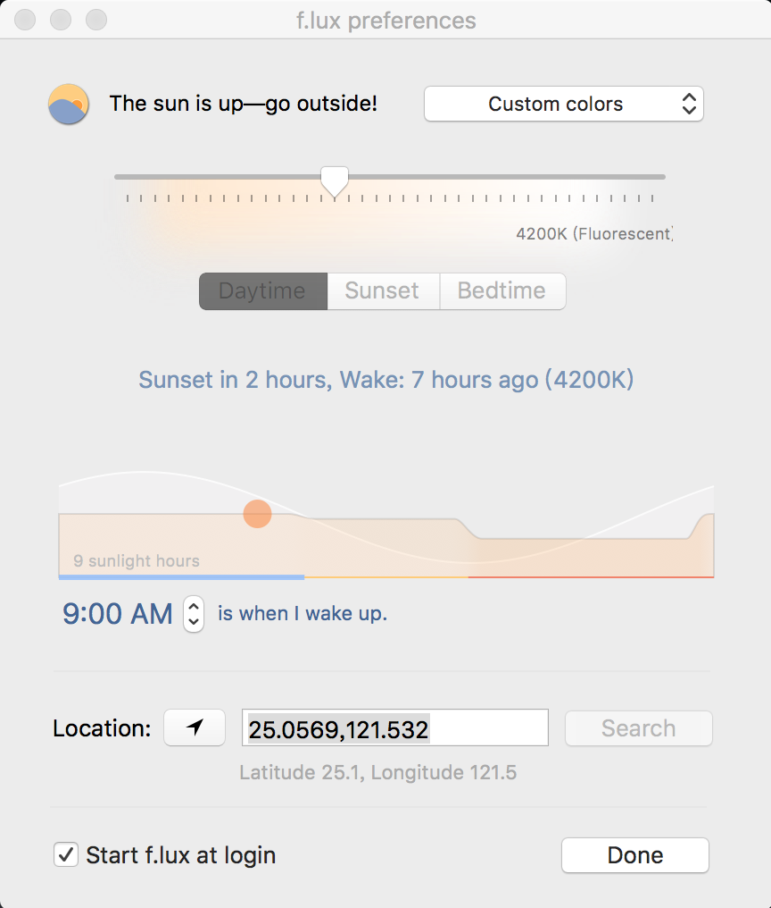
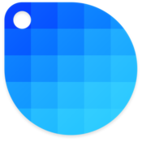
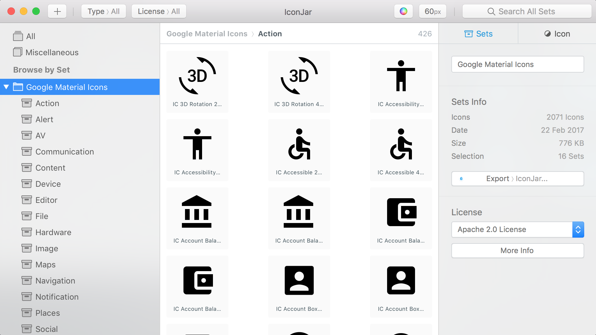

自兩年前買了人生的第一台Mac後，就開始立志成為完美的工具人，感謝這兩年許多朋友及老師的推坑
如今工具人也有點小小的心得，就在這邊挖坑掩埋你
--
F.lux
對於要長時間注視電腦的人，F.lux可以讓螢幕變黃，不會有太多太白的藍光進入你的眼睛，可以延長每日使用電腦的時數？！！

Sip
自從被推坑這滴管後，做開發時都會拿這滴管直接取得16進位的色碼，他會同時複製到剪貼簿裡，所以只要按貼上就可以超方便使用，另外還有紀錄一些近期的顏色，可以在急迫時，選一個顏色來用

Todoist
Todois是這陣子又回歸來使用的免費代辦事項，往常沒有可以回歸已完成事項，有一陣子差點跳到奇妙清單來使用(奇妙清單的界面對我來說太豐富，委屈了幾天還是放棄使用奇妙清單)，相較於Any Do他的存放比較像是資料夾形式，因此很快就上手，可惜的地方是要專業版才能跟行事曆合併
未來有機會想嘗試看看2Do
Macdown
打這篇時，就是用Macdown來做編輯的，Macdown極為方便可以用簡單的指令打出技術文件，比如說code的灰色區塊等...對於編輯技術文件真的很方便
Atom
從Sublime 跳槽到Atom 不外乎介面優美，以及人性化的package，不過蠻吃電腦資源是真的，有時真的會聽到電腦默默吃風扇的哀嚎
有些autocomplete,等的package就不都說了，下面推薦幾個蠻好用的package
color-picker
直接在程式碼堆裡踢選你最愛的顏色
highlight-column
對於自己有程式碼對齊潔癖，這真的很方便
iTerm
不想用終端機？那就用iTerm吧！有別於mac本身內建的terminal能夠更改介面樣式真的是太親名了
Balsamiq Mockups3
之前上Udemy一個老師常常使用，用手繪風格畫的wirefram
CheatSheet
commend鍵按到底，一切海闊天空
IconJar
設計找icon的好物，於今年過了Beta版，因此收費19.9美元

目前也有一個奧格設計製作的 Eagle 包含了更多功能也可以試試看
AirMail
因為apple系列本身的郵件真的很不靈光，對於能操控性也很低，當mail寄來時除了設定每隔多久可以檢視一次，無法捕抓即時的mail，airmail十足的補足這一點，還多了todo的功能
Magnet
mac在升等El Capitan時推出了，畫面分割的功能，但是就只支援左右分割！！！這對於同時要看兩個以上的畫面就非常不方便
--
↑推坑恆久遠，掩埋永流傳
comments powered by Disqus